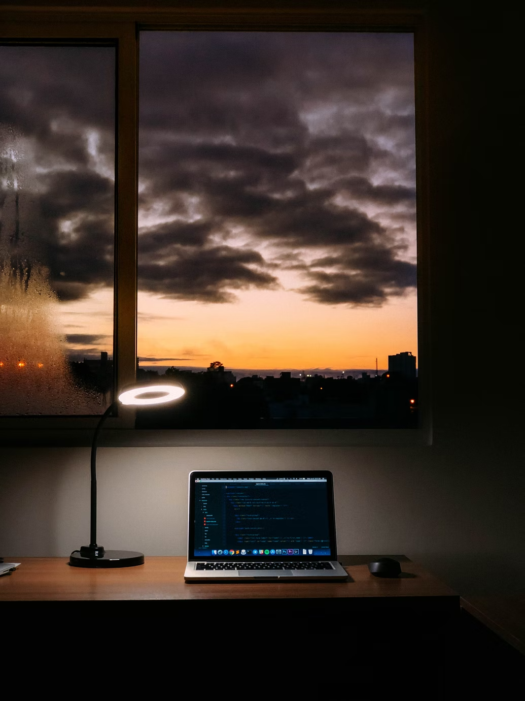

Hi there! My name is Samuel and welcome to my learning journal.
I'm a frontend developer in the making, documenting what I learn as I work through the Scrimba Bootcamp, one project at a time.
Why I started this journal
Writing about what I learn helps me understand it better. This journal is where I reflect on new concepts, share the projects I build, and keep track of how far I've come.
What I'm learning
Right now I'm focused on HTML, CSS, and JavaScript fundamentals, with a lot of attention on responsive layouts and accessibility. Next up: React and working with APIs.
Outside of code
When I'm not coding, I enjoy reading, exploring new places, and spending time with friends and family.